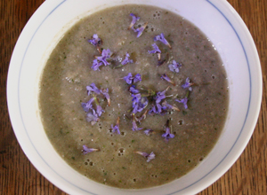

Woudsoep met champignons en hondsdraf
De combinatie van deze twee planten van de ondergroei roept beelden op van
een mooie lentemorgen in een vochtig bos.
Ingrediënten
Voor 4 kommen :

- 600 gram Parijse champignons
- Een handvol bladeren van de hondsdraf
- 1 ui
- Peper en zout
Bak de ui glazig in een beetje olie. Snijd de champignons in schijfjes en
voeg toe. Laat de champignons zachtjes slinken en voeg langzamerhand de
hondsdrafbladeren toe. Wanneer de champignons gehalveerd zijn in volume,
voeg dan water toe tot de groenten net onder staan. Voeg de rest van de
hondsdrafbladeren toe. Laat 5 minuten sudderen op een laag vuurtje. Mix,
decoreer met enkele hondsdrafbloemetjes en serveer de soep.
Het is belangrijk de champignons niet met water te wassen aangezien ze al
het water opzuigen. Indien u ze nat maakt, loopt u het risico het
kookproces te vertragen waardoor de champignons eerder gekookt (en niet
gebakken) zullen worden. Met behulp van een champignonborsteltje of een
mes kunnen restjes van aarde of blaadjes gemakkelijk verwijderd worden.